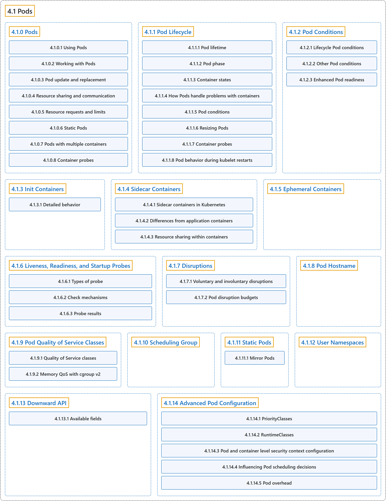

4.1 Pods
Classification

Glossary
| Term | Definition | 中文翻译 | Source |
|---|---|---|---|
| 4.1 Pods Pod |
"Pods are the smallest deployable units of computing that you can create and manage in Kubernetes." | Pod 是最小的可部署计算单元，可供你在 Kubernetes 中创建和管理。 | The Kubernetes Authors, n.d.-k, "Pods", para. 1 |
| 4.1.0 Pods Pod |
"Pods are the smallest deployable units of computing that you can create and manage in Kubernetes." "A Pod (as in a pod of whales or pea pod) is a group of one or more containers, with shared storage and network resources, and a specification for how to run the containers." | Pod 是最小的可部署计算单元，你可以在 Kubernetes 中创建和管理它。Pod（就像一群鲸鱼或一个豌豆荚）是一组一个或多个容器，共享存储和网络资源，并带有如何运行这些容器的规约。 | The Kubernetes Authors, n.d.-k, "Pods", para. 1 and 2 |
| 4.1.1 Pod Lifecycle Pod 的生命周期 |
(context) "Pods follow a defined lifecycle," | （语境）Pod 遵循一个既定的生命周期， | The Kubernetes Authors, n.d.-i, "Pod Lifecycle", para. 1 |
| 4.1.2 Pod Conditions Pod 状况 |
"Conditions are markers for some aspect of the actual state of the thing the object represents." | 状况是对象所代表事物实际状态某一方面的标记。 | The Kubernetes Authors, n.d.-g, "Pod Conditions", para. 1 |
| 4.1.3 Init Containers Init 容器 |
"This page provides an overview of init containers: specialized containers that run before app containers in a Pod." | 本页概述 Init 容器：专用容器，在 Pod 中先于应用容器运行。 | The Kubernetes Authors, n.d.-e, "Init Containers", para. 1 |
| 4.1.4 Sidecar Containers 边车容器 |
"Sidecar containers are the secondary containers that run along with the main application container within the same Pod." | 边车容器是辅助容器，在同一个 Pod 中与主应用容器一起运行。 | The Kubernetes Authors, n.d.-m, "Sidecar Containers", para. 2 |
| 4.1.5 Ephemeral Containers 临时容器 |
"ephemeral containers: a special type of container that runs temporarily in an existing Pod" | 临时容器：一种特殊类型的容器，在已有 Pod 中临时运行 | The Kubernetes Authors, n.d.-d, "Ephemeral Containers", para. 1 |
| 4.1.6 Liveness, Readiness, and Startup Probes 存活、就绪和启动探针 |
"Kubernetes lets you define probes to continuously monitor the health of containers in a Pod." | Kubernetes 让你定义探针，持续监控 Pod 中容器的健康状况。 | The Kubernetes Authors, n.d.-f, "Liveness, Readiness, and Startup Probes", para. 1 |
| 4.1.7 Disruptions 干扰 |
(context) "This guide is for application owners who want to build highly available applications, and thus need to understand what types of disruptions can happen to Pods." | （语境）本指南面向想构建高可用应用的应用所有者，他们因此需要了解 Pod 可能遇到哪些类型的干扰。 | The Kubernetes Authors, n.d.-b, "Disruptions", para. 1 |
| 4.1.8 Pod Hostname Pod 主机名 |
(context) "When a Pod is created, its hostname (as observed from within the Pod) is derived from the Pod's metadata.name value." | （语境）创建 Pod 时，它的主机名（从 Pod 内部看到的）取自 Pod 的 metadata.name 值。 | The Kubernetes Authors, n.d.-h, "Default Pod hostname", para. 1 |
| 4.1.9 Pod Quality of Service Classes Pod 服务质量类 |
"Kubernetes classifies the Pods that you run and allocates each Pod into a specific quality of service (QoS) class." | Kubernetes 对你运行的 Pod 进行分类，并把每个 Pod 归入特定的服务质量（QoS）类。 | The Kubernetes Authors, n.d.-j, "Quality of Service classes", para. 1 |
| 4.1.10 Scheduling Group 调度组 |
(context) "When the GenericWorkload feature gate is enabled, you can set the spec.schedulingGroup field in your Pod manifest." |
（语境）启用 GenericWorkload 特性门控后，你可以在 Pod 清单中设置 spec.schedulingGroup 字段。 |
The Kubernetes Authors, n.d.-l, "Specifying a scheduling group", para. 1 |
| 4.1.11 Static Pods 静态 Pod |
"Static Pods are managed directly by the kubelet daemon on a specific node, without the API server observing them." | 静态 Pod 由特定节点上的 kubelet 守护进程直接管理，API 服务器不会观察它们。 | The Kubernetes Authors, n.d.-n, "Static Pods", para. 1 |
| 4.1.12 User Namespaces 用户命名空间 |
"User namespaces is a Linux feature that allows you to map users in the container to different users in the host." | 用户命名空间是一项 Linux 功能，让你把容器内的用户映射为主机上的不同用户。 | The Kubernetes Authors, n.d.-o, "Introduction", para. 1 |
| 4.1.13 Downward API Downward API |
"The downward API allows containers to consume information about themselves or the cluster without using the Kubernetes client or API server." | Downward API 让容器获取关于自身或集群的信息，而无需使用 Kubernetes 客户端或 API 服务器。 | The Kubernetes Authors, n.d.-c, "Downward API", para. 2 |
| 4.1.14 Advanced Pod Configuration Pod 高级配置 |
(context) "This page covers advanced Pod configuration topics" | （语境）本页介绍 Pod 的高级配置主题 | The Kubernetes Authors, n.d.-a, "Advanced Pod Configuration", para. 1 |
References
The Kubernetes Authors. (n.d.-a). Advanced Pod Configuration. Kubernetes Documentation. Retrieved October 31, 2026, from https://kubernetes.io/docs/concepts/workloads/pods/advanced-pod-config/
The Kubernetes Authors. (n.d.-b). Disruptions. Kubernetes Documentation. Retrieved October 31, 2026, from https://kubernetes.io/docs/concepts/workloads/pods/disruptions/
The Kubernetes Authors. (n.d.-c). Downward API. Kubernetes Documentation. Retrieved October 31, 2026, from https://kubernetes.io/docs/concepts/workloads/pods/downward-api/
The Kubernetes Authors. (n.d.-d). Ephemeral Containers. Kubernetes Documentation. Retrieved October 31, 2026, from https://kubernetes.io/docs/concepts/workloads/pods/ephemeral-containers/
The Kubernetes Authors. (n.d.-e). Init Containers. Kubernetes Documentation. Retrieved October 31, 2026, from https://kubernetes.io/docs/concepts/workloads/pods/init-containers/
The Kubernetes Authors. (n.d.-f). Liveness, Readiness, and Startup Probes. Kubernetes Documentation. Retrieved October 31, 2026, from https://kubernetes.io/docs/concepts/workloads/pods/probes/
The Kubernetes Authors. (n.d.-g). Pod Conditions. Kubernetes Documentation. Retrieved October 31, 2026, from https://kubernetes.io/docs/concepts/workloads/pods/pod-condition/
The Kubernetes Authors. (n.d.-h). Pod Hostname. Kubernetes Documentation. Retrieved October 31, 2026, from https://kubernetes.io/docs/concepts/workloads/pods/pod-hostname/
The Kubernetes Authors. (n.d.-i). Pod Lifecycle. Kubernetes Documentation. Retrieved October 31, 2026, from https://kubernetes.io/docs/concepts/workloads/pods/pod-lifecycle/
The Kubernetes Authors. (n.d.-j). Pod Quality of Service Classes. Kubernetes Documentation. Retrieved October 31, 2026, from https://kubernetes.io/docs/concepts/workloads/pods/pod-qos/
The Kubernetes Authors. (n.d.-k). Pods. Kubernetes Documentation. Retrieved October 31, 2026, from https://kubernetes.io/docs/concepts/workloads/pods/
The Kubernetes Authors. (n.d.-l). Scheduling Group. Kubernetes Documentation. Retrieved October 31, 2026, from https://kubernetes.io/docs/concepts/workloads/pods/scheduling-group/
The Kubernetes Authors. (n.d.-m). Sidecar Containers. Kubernetes Documentation. Retrieved October 31, 2026, from https://kubernetes.io/docs/concepts/workloads/pods/sidecar-containers/
The Kubernetes Authors. (n.d.-n). Static Pods. Kubernetes Documentation. Retrieved October 31, 2026, from https://kubernetes.io/docs/concepts/workloads/pods/static-pods/
The Kubernetes Authors. (n.d.-o). User Namespaces. Kubernetes Documentation. Retrieved October 31, 2026, from https://kubernetes.io/docs/concepts/workloads/pods/user-namespaces/